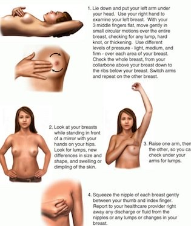

| Most breast lumps are not caused by cancer. Early detection and prompt treatment are important in the case of breast cancer. It is one of the best things you can do for your health. Finding and treating breast cancer early can save your life. All women should perform self-exams on their breasts every month, preferably at the end of their menstrual period when the breasts are less tender and less swollen. Breastfeeding mothers should examine their breasts after completing a feeding. What kind of breast lump is it?Soft If the lump is small, it could be a small milk-filled cyst called a galactocele. This is a harmless fluid filled sac of tissue. It feels smooth and squishy. A cyst will feel like a water balloon and can move around and can change in size during your menstrual cycle. An untreated blocked milk duct can develop into an infection or an abscess. If a clogged milk duct gets very swollen and infected, it becomes an abscess. It's possible for an abscess to grow as large as a lime. An abscess is an example of a very painful and soft lump which needs to be drained and treated with anti-biotics.Hard Lump This is common during breastfeeding and even for women who are no longer breastfeeding. If the breast lump is hard, uniform in shape, and you can move it around it is probably a plugged duct. A plugged duct can be tender and even painful especially if it develops into mastitis. It's important to prevent and treat a plugged duct immediately so it doesn't get worse. Breast Fibroadenomas are another type of benign hard breast lump that can be found in breast tissue. Fibroadenomas are made of fibrous and glandular tissues. During self-examination it feels like a round breast lump, and may be hard or firm, and can be moved around during a breast self-exam. Hard fixed and irregular Cancerous breast lumps are fixed and irregular in shape and texture. It might feel like a slice of raw carrot. Usually cancerous tumors are hard and you can't really move it around though sometimes it's difficult to know if the lump is moving, or if healthy tissue around it is moving. A clinical breast exam and a mammogram will help to clear up the diagnosis. A needle biopsy might be needed to provide more information about the lump.Signs and symptoms of a Cancerous breast lumpA painless breast lump that is firm or hard, with irregular borders (edges) Armpit lump Arm swelling Bone pain Difference in breast size, compared with what it used to look like Nipple changes, including pulling inward, swelling, or itching Nipple discharge which is usually bloody or straw-colored fluid Skin changes such as dimpling or "orange peel" appearance, redness, easy to see veins on breast surface, and even skin ulceration Weight loss Cancer and breastfeeding - breast lump Self ExamA breast self-exam is done to detect changes that could lead to breast cancer. To learn what is normal for your breasts and to find any problems, you should do a breast self-exam once a month. By doing routine breast self-exams and having routine mammograms and checkups, you can help detect breast problems early. If breast cancer is found early, most women can be treated with success. That is why routine breast self-exams, mammography, and checkups by your doctor are so important. By doing a monthly breast self-exam, you learn how your breasts feel. This helps you detect any changes or signs of a problem. All women should do the exam once a month. This includes women who - have gone through menopause
- are pregnant
- are breast-feeding
- have breast implants
Any changes or lumps should be discussed with your doctor right away. How to Do a Breast Self-ExamThe best time to do the breast self-exam is a few days after your period ends each month. Your breasts are less tender or swollen at this time. If you are not having periods, try to do the exam on the same day each month. Some women choose the first day of each month to help them remember. There are two parts to a breast self-exam—looking and feeling.
| Breast Self Exam  Look Stand or sit in front of a mirror. Place arms at your sides. Look for dimpling, puckering, or redness of the breast skin, discharge from nipples, or changes in breast size or shape. Look for the same signs with your hands pressed tightly on your hips and then with your arms raised up in the air over your head. Feel Lie down and place your right arm behind your head. It's important to examine your breasts while lying down because in this position the breast tissue spreads evenly over the chest wall and is as thin as possible, making it much easier to feel all the breast tissue. Lie flat on your back. Place a folded towel or a pillow under your left shoulder. Place your left hand under or over your head. You also can feel for changes or breast lumps when you are standing. With your right hand, keeping the fingers flat and together, gently feel your left breast without pressing too hard. Use one of the three methods shown here. Then lower your right arm and do the exam on the other breast. Use a variety of methodsCircle. Circle. Begin at the top of your breast and move your fingers slowly around the outside in a large circle. When you return to the top, move your hand a little closer to the nipple and make a smaller circle. Do this in smaller and smaller circles until you have examined all of the breast tissue. Lines. Begin in the underarm area. Slowly move your fingers down until they are below your breast. Move your fingers closer toward your nipple and go slowly back up, using the same motion. Use this up-and-down pattern all the way across your breast. Wedge. Begin at the outside edge of your breast. Slowly work your way in toward the nipple, doing one wedge-shaped section at a time. Do this until the entire breast area has been examined. Nipples- With any pattern, be sure to examine the nipples also. Gently squeeze the nipple and check for any discharge.
- Examine the upper chest area and below the armpits - these places also have breast tissue.
- Call your doctor if you notice any lumps or changes in your breasts.
|
|
Look Look at your breasts in the mirror - make sure you have enough light during this stage of the exam. Feel Feel for any changes or breast lumps. You can do this lying flat on your back, standing, or when you are taking a shower or bath. Make sure to examine your breasts both lying down and standing. There is evidence that while lying down, the area felt, pattern of coverage of the breast, and use of different amounts of pressure increase a woman's ability to find abnormal areas. Examine one breast at a time. Feel with the pads of your three middle fingers. Use 3 different levels of pressure to feel all the breast tissue. Light pressure is needed to feel the tissue closest to the skin; medium pressure to feel a little deeper; and firm pressure to feel the tissue closest to the chest and ribs. Examine each underarm while sitting up or standing and with your arm only slightly raised so you can easily feel in this area. Raising your arm straight up tightens the tissue in this area and makes it harder to examine. Remember how your breasts feel each month. Mark any breast lumps or other changes on a diagram and show it to your doctor. Signs of a Problem If you notice any of these symptoms during your breast self-exam, call your doctor: - A breast lump
- Swelling
- Skin irritation
- Dimpling
- Pain
- Nipple retraction (nipple turns in)
- Redness of nipple or breast skin
- Scaly nipple or breast skin
- Nipple discharge
Any breast lump should be checked right away. Tests may be needed. In some cases, a biopsy may be done to look at the tissue. Finally... If you detect any signs of a problem, talk to your doctor. By doing routine breast self-exams and having routine mammograms and checkups, you can help detect breast problems early—when they most likely can be treated with success.
| ![XML RSS]()


![Add to My MSN]()
![Subscribe with Bloglines]()